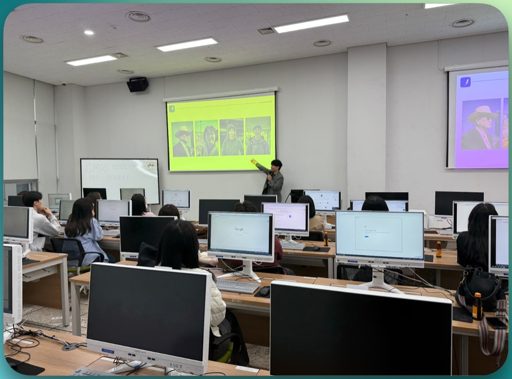
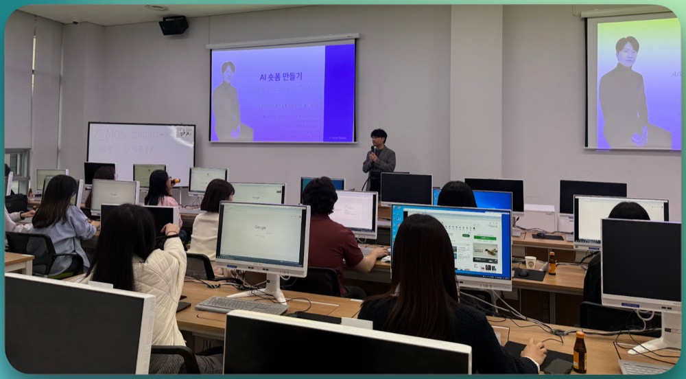
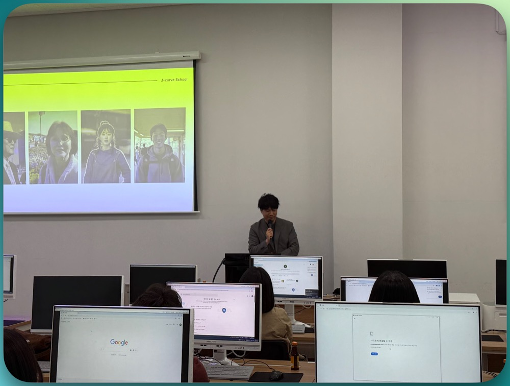

안녕하세요, 팀 제이커브 H입니다 :)
지난주, 건강보험심사평가원 (‘심평원’)과 함께하는 생성형 AI 숏폼 콘텐츠 워크숍을 진행했어요.
현장의 분위기도 정말 뜨거웠고, 실제로 많은 분들이 AI와 콘텐츠 제작에 대한 관심과 열정을 보여주셨는데요!
생생했던 순간을 여러분께 소개해볼까 합니다!
✅ 심평원이란?
처음 들어보시는 분들도 계실 것 같아 간단히 설명드릴게요.
건강보험심사평가원(HIRA)은 우리가 병원에 갔을 때 청구되는 진료비가 적절하게 쓰였는지를 심사하고 평가하는 공공기관이에요.
예를 들어 병원에서 어떤 진료를 받고 보험 처리를 하면, 그 진료가 과잉이 아닌지, 기준에 맞게 처리됐는지를 심평원이 확인합니다.
또, 병원별로 진료의 질(quality)이 어떤지도 평가해서 국민들이 더 나은 의료 서비스를 받을 수 있도록 돕는 역할을 하고 있어요.
쉽게 말해, 국민의 의료비가 제대로 쓰이도록 감시하고 평가하는 곳!
의료 서비스와 직접적으로 관련된 기관이라 그런지, 콘텐츠 제작에 있어서도 신중하고 전문적인 접근이 필요하겠죠?
🎓 강의 내용 정리
이번 워크숍의 핵심은 “AI를 이용해 어떻게 쉽고 효과적인 콘텐츠를 만들 수 있을까?” 였어요.
특히 요즘 핫한 ‘숏폼 콘텐츠’에 집중해서 다양한 실습과 활동을 함께했습니다.
1. AI와 인간, 과연 구별이 가능할까?
가볍게 몸풀기로, AI가 만든 콘텐츠와 사람이 만든 콘텐츠를 비교해보는 시간부터 시작했어요.
AI vs 인간의 글쓰기
두 개의 요리 심사평 중 어느 것이 AI가 쓴 글인지 맞히는 게임이었는데요, 생각보다 많은 분들이 헷갈려하셨어요. 그만큼 AI의 글쓰기 능력이 굉장히 자연스럽고 정교해졌다는 걸 느낄 수 있었어요.
AI vs 인간의 이미지/음악
가족사진 중 누가 AI로 만들어졌는지 맞히거나, 음악 샘플을 듣고 어떤 곡이 AI가 작곡한 곡인지 맞히는 시간도 있었어요. 유쾌한 분위기 속에서 참가자분들의 몰입도가정말 높았습니다.

2. 실습! 나만의 AI 숏폼 콘텐츠 만들기
이제 본격적으로 실습 타임!
참가자들은 심평원 유튜브 채널에 올라온 영상들을 분석하고, 그 중에서 핵심 장면을 뽑아 AI 도구를 활용한 광고 스크립트 제작에 도전했어요.
활용한 도구는 다음과 같아요:
- ✏️ ChatGPT: 스크립트 자동 생성
- 🎬 릴리스AI: 영상 흐름 구성
- 📱 AI 영상 편집툴: 자동 편집까지 척척!
특히 ‘네 컷 광고 영상’이라는 포맷은 숏폼 초보자분들에게도 도전해볼 만한 쉽고 간단한 구조라서 반응이 좋았어요.

3. AI 도구 기초 교육
실습에 앞서 간단한 생성형 AI 도구 소개도 함께했어요.
AI가 단순히 텍스트만 생성하는 게 아니라, 이미지, 영상, 음성까지 다 다룰 수 있다는 사실에 놀라는 분들도 많았답니다.
- 🛠 노코드 도구 사용법
- 🧠 LLM (대형 언어모델) 이해
- 🎨 AI 기반 콘텐츠 제작 예시
업무 자동화나 콘텐츠 기획에 AI를 어떻게 활용할 수 있을지, 실무에 바로 적용할 수 있는 팁도 풍성하게 나눴어요.

💌 마무리하며
처음엔 “내가 과연 AI로 콘텐츠를 만들 수 있을까?” 걱정하던 분들도,
워크숍이 끝나갈 무렵에는 “오! 이거 업무에 써봐야겠는데요?”라며 자신감을 보이셨어요.
무엇보다 인상 깊었던 건,
모두가 스스로 ‘AI를 활용한 일잘러’가 되어보는 즐거움을 느꼈다는 점 이었습니다.
🤝 팀 제이커브와 함께하고 싶다면?
AI, 어렵지 않습니다.
‘잘 다루는 사람’이 되는 첫 걸음은 경험해보는 것이니까요 :)
- 👥 사내 교육 / 워크숍
- ✏️ AI 기획 및 제작 실습
- 🧠 AI 리터러시 교육부터 실무 적용까지!
지금 우리 조직에 꼭 필요한 AI 교육을 찾고 계신다면,
팀 제이커브와 함께해보세요!
📩 문의: info@teamjcurve.com
안녕하세요, 팀 제이커브 H입니다 :)
지난주, 건강보험심사평가원 (‘심평원’)과 함께하는 생성형 AI 숏폼 콘텐츠 워크숍을 진행했어요.
현장의 분위기도 정말 뜨거웠고, 실제로 많은 분들이 AI와 콘텐츠 제작에 대한 관심과 열정을 보여주셨는데요!
생생했던 순간을 여러분께 소개해볼까 합니다!
✅ 심평원이란?
처음 들어보시는 분들도 계실 것 같아 간단히 설명드릴게요.
건강보험심사평가원(HIRA)은 우리가 병원에 갔을 때 청구되는 진료비가 적절하게 쓰였는지를 심사하고 평가하는 공공기관이에요.
예를 들어 병원에서 어떤 진료를 받고 보험 처리를 하면, 그 진료가 과잉이 아닌지, 기준에 맞게 처리됐는지를 심평원이 확인합니다.
또, 병원별로 진료의 질(quality)이 어떤지도 평가해서 국민들이 더 나은 의료 서비스를 받을 수 있도록 돕는 역할을 하고 있어요.
쉽게 말해, 국민의 의료비가 제대로 쓰이도록 감시하고 평가하는 곳!
의료 서비스와 직접적으로 관련된 기관이라 그런지, 콘텐츠 제작에 있어서도 신중하고 전문적인 접근이 필요하겠죠?
🎓 강의 내용 정리
이번 워크숍의 핵심은 “AI를 이용해 어떻게 쉽고 효과적인 콘텐츠를 만들 수 있을까?” 였어요.
특히 요즘 핫한 ‘숏폼 콘텐츠’에 집중해서 다양한 실습과 활동을 함께했습니다.
1. AI와 인간, 과연 구별이 가능할까?
가볍게 몸풀기로, AI가 만든 콘텐츠와 사람이 만든 콘텐츠를 비교해보는 시간부터 시작했어요.
AI vs 인간의 글쓰기
두 개의 요리 심사평 중 어느 것이 AI가 쓴 글인지 맞히는 게임이었는데요, 생각보다 많은 분들이 헷갈려하셨어요. 그만큼 AI의 글쓰기 능력이 굉장히 자연스럽고 정교해졌다는 걸 느낄 수 있었어요.
AI vs 인간의 이미지/음악
가족사진 중 누가 AI로 만들어졌는지 맞히거나, 음악 샘플을 듣고 어떤 곡이 AI가 작곡한 곡인지 맞히는 시간도 있었어요. 유쾌한 분위기 속에서 참가자분들의 몰입도가정말 높았습니다.

2. 실습! 나만의 AI 숏폼 콘텐츠 만들기
이제 본격적으로 실습 타임!
참가자들은 심평원 유튜브 채널에 올라온 영상들을 분석하고, 그 중에서 핵심 장면을 뽑아 AI 도구를 활용한 광고 스크립트 제작에 도전했어요.
활용한 도구는 다음과 같아요:
특히 ‘네 컷 광고 영상’이라는 포맷은 숏폼 초보자분들에게도 도전해볼 만한 쉽고 간단한 구조라서 반응이 좋았어요.

3. AI 도구 기초 교육
실습에 앞서 간단한 생성형 AI 도구 소개도 함께했어요.
AI가 단순히 텍스트만 생성하는 게 아니라, 이미지, 영상, 음성까지 다 다룰 수 있다는 사실에 놀라는 분들도 많았답니다.
업무 자동화나 콘텐츠 기획에 AI를 어떻게 활용할 수 있을지, 실무에 바로 적용할 수 있는 팁도 풍성하게 나눴어요.

💌 마무리하며
처음엔 “내가 과연 AI로 콘텐츠를 만들 수 있을까?” 걱정하던 분들도,
워크숍이 끝나갈 무렵에는 “오! 이거 업무에 써봐야겠는데요?”라며 자신감을 보이셨어요.
무엇보다 인상 깊었던 건,
모두가 스스로 ‘AI를 활용한 일잘러’가 되어보는 즐거움을 느꼈다는 점 이었습니다.
🤝 팀 제이커브와 함께하고 싶다면?
AI, 어렵지 않습니다.
‘잘 다루는 사람’이 되는 첫 걸음은 경험해보는 것이니까요 :)
지금 우리 조직에 꼭 필요한 AI 교육을 찾고 계신다면,
팀 제이커브와 함께해보세요!
📩 문의: info@teamjcurve.com